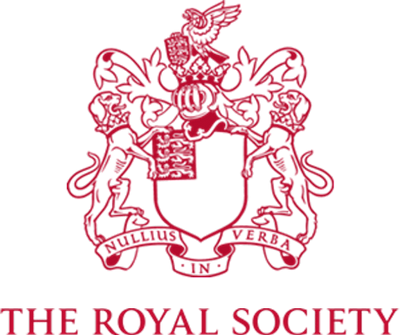
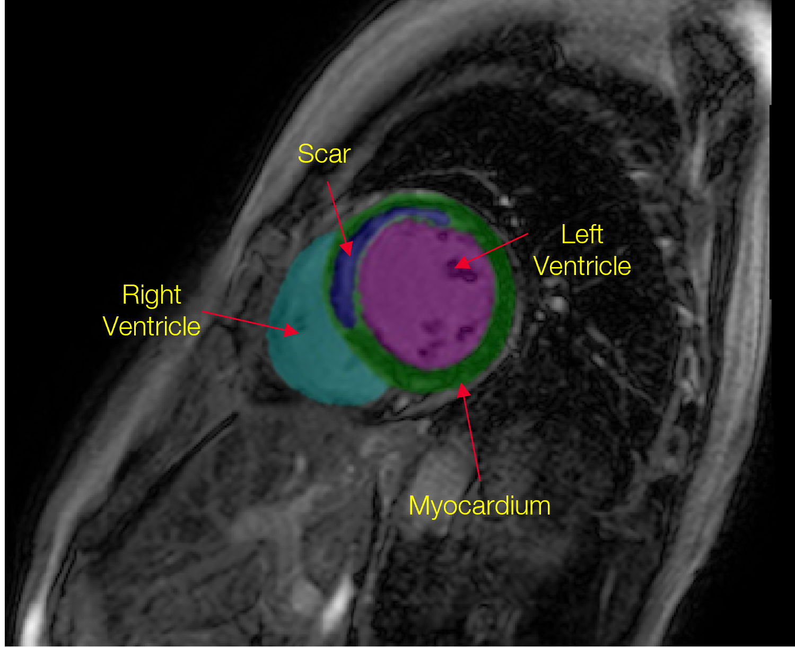

Acknowledgements

The Royal Society'"/>
NHS · Nottingham UH'"/>
University of Nottingham'"/>
Project · Multimodal AI · Cardiac Imaging
ECG and Anatomical Knowledge-Guided Myocardial Scar Segmentation from Late Gadolinium-Enhanced Images
1 School of Computer Science, University of Sheffield
2 Department of Cardiology, Nottingham University Hospitals NHS Trust
3 School of Medicine, University of Nottingham
4 Department of Engineering Science, University of Oxford
The ECG tells the model where scar should be. The image shows it what scar looks like. Together they achieve what neither can alone, delivering a 37% improvement over the image-only state of the art.

The task: detect and segment myocardial scar from LGE-CMR, guided not just by what the image shows but by what the ECG already knows about where scar can be.
The clinical problem
Late Gadolinium Enhancement MRI is the standard for visualising myocardial scar, but the boundary between scarred and healthy tissue is not always sharp. Image contrast varies between scanners and patients, small or diffuse scars are easy to miss, and a model trained only on images inherits all of that ambiguity.
Clinicians don't work from the image in isolation. The 12-lead ECG carries complementary physiological evidence about where electrical conduction has been disrupted. That evidence often points to scar the image renders ambiguously. The question this work asks is simple: if a cardiologist uses both, can a segmentation model learn to do the same?
Export from Slide 5 — "Can you spot the scar?" — scar detection challenge
A real LGE cardiac MRI short-axis slice showing the challenge: boundaries are unclear, appearance varies across patients, motion artifacts, and low contrast with healthy tissue.
Even for experienced cardiologists, identifying precise scar boundaries from LGE images alone is not straightforward. A model limited to the image inherits every one of these challenges.
A cardiologist never looks at the image alone. Neither should the model.
The clinical insight
The ECG is not just a monitoring output. Each lead has a well-established correspondence to a specific cardiac wall, which maps directly to specific AHA-17 myocardial segments. Abnormalities in lead II, III, aVF implicate the inferior wall. Abnormalities in V5, V6, I, aVL implicate the lateral wall. The ECG is, in effect, a physiological index of where scar is likely to be. No purely image-based model has ever used it.
This is the core motivation of the paper. The ECG provides a spatial prior that pre-locates scar at the level of cardiac territories, before the image features even enter the picture. TAFF is built to exploit exactly that prior.
Export from slides — ECG lead placement diagram + colour-coded territory traces
Lead electrode positions on the body (left) and their corresponding ECG traces colour-coded by cardiac territory: Septal (blue), Anterior (red), Lateral (green), Inferior (yellow).
Each of the 12 ECG leads is physically connected to a specific region of the heart. Abnormalities in a lead's trace point directly to the cardiac territory it monitors. TAFF uses this mapping as a conditioning prior.
Export from Slide 17 — ECG-AHA mapping with full lead table + AHA-17 atlas
The complete ECG lead-to-wall-to-segment mapping with the AHA-17 bull's-eye atlas and the standardisation diagram.
Export from Slide 21 — "ECG indicates scar in lateral wall" — Normal vs Scar ECG example
A concrete example: ECG abnormality in lateral leads localises to segments 5, 6, 11, 12, 16. The AHA-17 map translates the electrical signal into a spatial prediction.
A concrete example of the ECG-to-anatomy mapping in practice. Abnormalities in lateral leads directly implicate specific AHA-17 segments, giving the model a spatial head start before looking at the image.
The engineering challenge
ECGs and LGE-MRI scans are not acquired simultaneously. The gap between acquisitions varies per patient and per session. Cardiac physiology, rhythm, and fluid status can all shift in that window. Naively fusing features from asynchronous modalities treats them as if they were captured at the same instant, and that assumption degrades the fusion signal, particularly in patients where the gap is large.
Most multimodal methods pretend this problem doesn't exist. TAFF was built specifically to solve it by dynamically weighting the ECG contribution based on the measured time difference between acquisitions.
Export from Slide 22 — "Key Challenges for Integrating ECG" — temporal misalignment + spatial correspondence
The two core challenges: ECG and MRI are acquired at different times (temporal misalignment) and ECG leads capture cardiac regions, not pixel-level anatomy (spatial correspondence).
The two challenges that make ECG-MRI fusion genuinely hard, and that prior multimodal methods consistently fail to address.
The core module
TAFF is the module that makes ECG-MRI fusion clinically reliable. It operates in three stages: first learning how much to trust the ECG given the time gap, then using that trust signal to modulate how image features are shifted and scaled, and finally letting ECG temporal features and image spatial features attend to each other through cross-attention.
The result is a fusion that is not just spatially aligned. It is temporally honest. When the ECG was recorded recently, it carries full weight. When it was recorded long ago, the model learns to rely more on what the image itself says.
ECG Encoder
The 12-lead ECG median waveform is encoded into a sequence of temporal feature vectors, each representing a time step in the cardiac cycle across all leads simultaneously.
Gating MLP
A lightweight MLP takes the ECG-MRI acquisition time difference as input and outputs a gate scalar that controls how strongly the ECG features are allowed to influence the image features.
Temporal FiLM
Feature-wise Linear Modulation applies the gated ECG context to shift and scale image encoder features, conditioning the image representation on the physiological signal without any hard concatenation.
Cross-Attention
ECG temporal features and spatial image features attend to each other bidirectionally. The ECG attends to relevant spatial regions; the image attends to relevant cardiac cycle phases.
Export from Slide 27 — TAFF: Gating MLP, Temporal FiLM, cross-attention
The internal TAFF architecture: MRI features and ECG features enter, the Gating MLP weights by time gap, Temporal FiLM modulates image features, and cross-attention aligns the two modalities.
Inside TAFF. The Gating MLP controls ECG influence. Temporal FiLM applies it. Cross-attention aligns the two modalities spatially and temporally.
Export from Slide 26 — "Our Multimodal Pipeline" — complete pipeline with TAFF + AHA-17
The full pipeline: LGE-MRI encoder + 12-lead ECG encoder + AHA-17 anatomical prior fused through TAFF to produce the scar segmentation prediction.
Overview of the full multimodal framework. LGE image, ECG median waveform, and AHA-17 anatomical prior are all fused through TAFF to produce the scar segmentation.
Quantitative results
The model improves Dice from 0.6149 to 0.8463 over nnU-Net, a +37.6% relative gain in scar segmentation accuracy. Scar volume error drops from 4.43 ml to 1.97 ml, a 55% reduction. Every improvement is statistically significant (paired t-test, p < 0.001).
Export from Slide 33 — "Segmentation Performance" — final build showing LGE-only vs LGE+ECG+AHA-17
Bar chart comparing LGE-only baseline vs the full multimodal pipeline, showing improvements of 23%, 20%, and 18% across the reported segmentation metrics.
| Method | Dice ↑ | Precision ↑ | Sensitivity ↑ | Vol. Diff ↓ |
|---|---|---|---|---|
| LGE only (nnU-Net baseline) | 0.6149 | 0.7315 | 0.7071 | 4.43 ml |
| LGE + ECG + AHA-17 (TAFF, ours) | 0.8463 | 0.9115 | 0.9043 | 1.97 ml |
Dice ↑ higher is better. Vol. Diff ↓ lower is better. All improvements over baseline are statistically significant (paired t-test, p < 0.001). Evaluated on Nottingham Multimodal Dataset (103 subjects, 7:1:2 split).
Detailed results
The ablation study isolates how much each component actually contributes. Removing time conditioning, removing the ECG entirely, or removing the anatomical prior each causes measurable drops in performance. Every combination still beats the baseline, but the full model with all three components consistently achieves the best results. Time conditioning turns out to be particularly important: without it, performance is unstable and degrades for patients with large ECG-MRI acquisition gaps.
| Model | Input | w/ AP | Dice ↑ | Precision ↑ | Sensitivity ↑ | Vol. Diff. ↓ |
|---|---|---|---|---|---|---|
| Baseline (unimodal) | LGE | ✕ | 0.6149 | 0.7315 | 0.7072 | 4.436 ml |
| Ours (multimodal) | LGE + ECG | ✓ | 0.8463 | 0.9115 | 0.9043 | 1.971 ml |
| Ablation study · AP = Anatomical Prior | ||||||
| w/o time conditioning | LGE + ECG | ✕ | 0.5916 | 0.7351 | 0.6398 | 6.256 ml |
| w/o time conditioning | LGE + ECG | ✓ | 0.8234 | 0.8234 | 0.8900 | 2.039 ml |
| w/o ECG | LGE | ✓ | 0.8204 | 0.9090 | 0.8408 | 2.196 ml |
| Full model (w/ time conditioning) | LGE + ECG | ✓ | 0.8463 | 0.9115 | 0.9043 | 1.971 ml |
AP = Anatomical Prior. Bold = best. All improvements over baseline are statistically significant (p < 0.001). Adding time conditioning on top of ECG + AP achieves the best results across every metric.
Export from Slide 35 — "Effect of Time Conditioning" — Dice by acquisition gap bin
Distribution of Dice scores across ECG-MRI time-interval bins, comparing models with and without time conditioning. TAFF remains stable; the no-conditioning model degrades with larger gaps.
Without time conditioning, performance drops for patients with large ECG-MRI acquisition gaps. TAFF's gating mechanism keeps it stable across all gap sizes.
Qualitative results
The most convincing evidence is visual. The cases where the image-only model misses or mislocates scar are precisely the cases where the ECG signal provides the spatial prior that corrects the prediction. The temporal attention maps confirm that the model learns to attend to the right ECG leads, the ones that correspond to the actual scar territory.
Export from Slide 36 — full panel: GT / Baseline / Multimodal / Temporal Attention / Scar Volume charts
(a) Ground truth, (b) baseline LGE-only, (c) multimodal TAFF, (d) temporal attention maps, (e–g) scar volume AHA-17 charts.
Ground truth vs LGE-only vs multimodal (TAFF). The multimodal model correctly localises scar in cases the image-only baseline misses. The temporal attention maps show the model has learned to attend to the clinically correct ECG leads.
More cases
Key contributions
First to bring physiology into imaging by using ECG to guide LGE-CMR scar segmentation
Prior work treats scar segmentation as a purely visual task. This paper is the first to integrate 12-lead ECG electrophysiological information as a conditioning signal for LGE-based scar segmentation, establishing a new direction for physiologically grounded cardiac AI. The approach mirrors how cardiologists actually reason: image and signal together, not image alone.
TAFF: temporal fusion done right, not assumed away
Most multimodal medical imaging methods ignore the time gap between modality acquisitions. TAFF explicitly models this gap via a Gating MLP and Temporal FiLM conditioning, dynamically adjusting ECG feature weight based on how recent the ECG is relative to the MRI. The time-conditioning ablation confirms this is not cosmetic. It is what keeps performance stable across patients with large acquisition gaps.
AHA-17 anatomical prior ensures physiologically consistent predictions
The AHA-17 atlas constrains where in the left ventricle each ECG lead is permitted to localise scar, ensuring the spatial prior is anatomically honest rather than statistically learned. Combined with TAFF, this means the model does not just perform better on average. It performs more precisely in the specific cardiac territories the ECG implicates, improving both Dice and regional scar volume accuracy.
Acknowledgements

The Royal Society'"/>Cite
@inproceedings{ramzan2026seeing,
title = {Seeing Beyond the Image: ECG and Anatomical Knowledge-Guided
Myocardial Scar Segmentation from Late Gadolinium-Enhanced Images},
author = {Ramzan, Farheen and Kiberu, Yusuf and Jathanna, Nikesh
and Jabrane, Meryem and Grau, Vicente and Jamil-Copley, Shahnaz
and Clayton, Richard H. and Chen, Chen},
booktitle = {IEEE International Symposium on Biomedical Imaging (ISBI)},
year = {2026},
note = {Oral presentation}
}